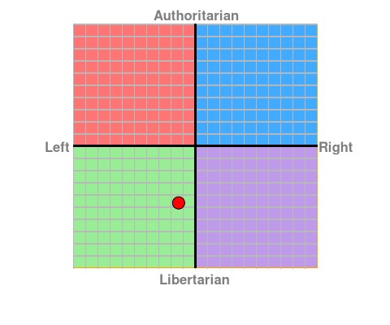

My name is Nathan Bresser my student ID is s3819728 and I’m a member of group AGIT. I am a 24 year-old Canberra native currently living in Sydney and working for a big four consulting firm and my hobbies are cycling and watching films. My grandparents emigrated from the Netherlands in the 60s and I am an English speaker. I’ve had an interest in IT from a very young age when my farther taught me how to use the family PC. Since then I lost touch with IT and pursued a career in accounting but have found that as time goes on, I continue to seek out opportunities at work that allow me to learn and develop my IT skills. My curiosity with IT was sparked again when I realised I could automate some of my work with VBA in Excel and currently my interest is focused on developing a ASP.NET web application. Through this project at work I've been able to explore HTML with Bootstrap, C# and SQL. This has exposed to me that If I want to pursue IT properly as a career, I need a formal education in the fundamentals, so I have decided to enrol in the Bachelor of IT at RMIT. My goal is to move from my Finance focused career path to a role where I can leverage my finance experience, business acumen and my IT skills.
My name is Tee Ming Chew and I am a member of AGIT. My student number is s3812497. I am a Malaysian Chinese born and raised on a tropical island known as Penang. This island is famous for its delicious delicacies and heritage sites. I am currently a student at RMIT preparing to enrol in the Bachelor of Information Technology degree program. I help to manage and set up the audio visual system for my local church on a regular basis and for special events. I started out without prior experience or knowledge but gained many new skills and broadened my range of understanding. I regularly assist by maintaining the audio and visual equipment such as projectors, microphones, mixers, cables, amongst other hardware. My interest in Information Technology (IT) stems from the amazing innovation behind the development of technology by large companies and small projects created by a single person. From my perspective, technology is not limited by the capabilities of hardware, but rather by the creativity of the idea. Although I have had no professional experience in the world of IT, I have always immersed myself in discovering ways of making my entertainment more convenient or accessible.
Hi, I’m Kris and I am from the SE suburbs of Melbourne VIC with English as my only spoken language. Student number S3819605 and our team name is AGIT. In 2000 I finished my VCE along with a few TAFE certifications in IT, since then I have studied off and on with some vendor specific certs such as CompTIA Network+ which I achieved in 2012 and have also trained online with CBTNuggets for the cisco CCNA, Microsoft server and exchange server but did not complete the certification track due to workload.. I have always had an interest in IT since around the age of 8 which was sparked by my first computer, the commodore amiga 64. Since then I had grown up with having computers and laptops which at the time in the 80’s and 90’s was not such a common thing unlike today. At the age of 12 I started to work on computer hardware which lead to starting my first business at 16 as a pc builder. Once I finished school I moved away from the IT world to work in the trades to which I eventually started working for a physical security company (CCTV, alarm, access control) which was heavily IP based and re sparked my interest in working with IT.
My name is Kristian Muller my student ID is s3728068 and I'm group member of AGIT. I currently reside in the beach suburb of Henley Beach South Australia. I'm currently studying a bachelor of logistics and supply chain management at RMIT. My hobbies include playing footy and golf on the weekend as well as watching a good movie. My interest in IT is functional; it is in a variety of software and hardware that can make the supply chain increasingly efficient for businesses to manage. I have always had an interest in IT, but recently this has developed into a specific interest in software that contributes to supply chain management effectiveness for firms like WIMS, WMS or JAIX. This new interest has come about since the warehouse I work in part time has moved from using paper-based inventory control to paperless RF scanners. I haven’t had much experience in IT apart from using the basics in the Microsoft suite and beginning to use RF scanners at work to control inventory. However, I am interested in broadening my knowledge in the area.
My name is Benjamin Brooks (s3786942, s3786942@student.rmit.edu.au), I was born in Sydney, Australia and currently live in Balmain East and I’m part of the group AGIT. My parents are multigenerational Australians with English, Irish and Italian ancestry. I completed my high school education in 2009, since then I have completed a Diploma of Financial Planning and am working towards a Bachelor of Business. I speak English but would love to learn another language at some point in the future (maybe a programming language). My interests include exercise, sports, philosophy, meditation and travel. My interest in IT is based on my current lack of technological knowledge. I want to be able to participate effectively and make use of advancing technologies. I am a Wealth Consultant at Westpac and use role specific programs, I can use basic programs like Word, Power Point etc. and use a number of social media platforms. I chose to study at RMIT as I want to pursue a career in finance, in particular financial analysis. Having a strong understanding of Information Technology will be very useful, as using data and presenting data will be a key function in finance.
My name is Angelo Kock, my student number is s3819893 and I am a member of the group AGIT. I have been in Australia for nearly three years and have just been granted my permanent residency. Originally, I am from Germany so logically my first language is German. I grew up in Hamburg, a city with a population of just over 2 mio. people. My lifestyle in Australia has changed drastically, as I live and work in a rural area on a cattle farm. I enjoy both, technology and nature and I would like to bring both of these areas together and utilise IT to improve farming practices, reduce excessive use and wastage of natural resources and consequently reduce the cost of operation in farming. My interests in IT started when I was young. I used thefirst video game consoles and desktop computers and eventually, with the vast development of IT within the last 15 years (introduction of the iPhone, HighSpeed Internet, Cloud Computing, automatization, IoT & MachineLearning), I realized that IT can be used for so much more. It can be used not only for big companies to do, for instance, complex calculations, but it can now actually be used to make everyone’s day-to-day tasks easier. As soon as I had realized that, I started to get more interested in programming and IoT. I also started to learn a little bit of HTML, CSS and JavaScript as well as Python and developed my own little projects with the Raspberry Pi. My studies at the RMIT will hopefully guide me the way to become a professional in IT and will help me to develop solutions for a more sustainable world, supported by IT.
| Test | Nathan Bresser | Tee Ming Chew | Kristen Schultz | Kristian Muller | Benjamin Brooks | Angelo Kock |
|---|---|---|---|---|---|---|
| Myers-Briggs Type Indicator |
Type Indicator: ENFP Strengths
|
Type Indicator: INFP-T Strengths
|
Type Indicator: ESTJ/ISTJ Strengths
|
Type Indicator: ISFP Strengths
|
Type Indicator: ENFJ Strengths
|
Type Indicator: ENFJ Strengths
|
| Learning style test |
Tactile: 50% Visual: 30% Auditory: 20% |
Tactile: 45% Visual: 40% Auditory: 15% |
Visual = 7 Aural = 6 Read/Write = 0 Kinaesthetic = 13 |
Auditory |
Tactile: 20% Visual: 45% Auditory: 35% |
Tactile: 25% Visual: 15% Auditory: 60% |
| Individual Test |
I also completed an only psychometric text for abstract reasoning. This required me to find the missing item in sequences and matrixes of shapes and symbols. This was the first time I have attempted a test like this and I was only able to get to 4 of the 15 questions in the seven minutes and thirty seconds of time provided. I was able to answer 3 of the questions correctly. (jobtestprep.co.uk/free-abstract-reasoning-test, 2019) |
Big Five Personality Test Openness: 75% Conscientiousness: 35% Extraversion: 27% Agreeableness: 60% Neuroticism: 71% |
Team Roles Online Test Expert (22%): The expert has the skills and expertise required for the specific task at hand. He or she has a strong focus on the task and may get defensive when others interfere with his or her work. The expert prefers to work alone and team members often have a great deal of trust and confidence in him or her. Executive (19%):The executive is sometimes also referred to as the organizer. The executive is generally disciplined and eager to get the job done. He or she is efficient, practical, and systematic. Executives are well organized and diligent, and quickly turn the ideas of a team into concrete actions and practical plans. Exlporer (14%)Innovator (14%) (123test.com/team-roles-test/, 2019) |
Big Five Personality Test Openness: 67% Conscientiousness: 44% Extraversion: 56% Agreeableness: 62% Neuroticism: 52% |
 |
Big Five Personality Test Openness: 87.5% Conscientiousness: 62.5% Extraversion: 56% Agreeableness: 69% Neuroticism: 58% (truity.com/test/big-five-personality-test, 2019) |
Placeholder